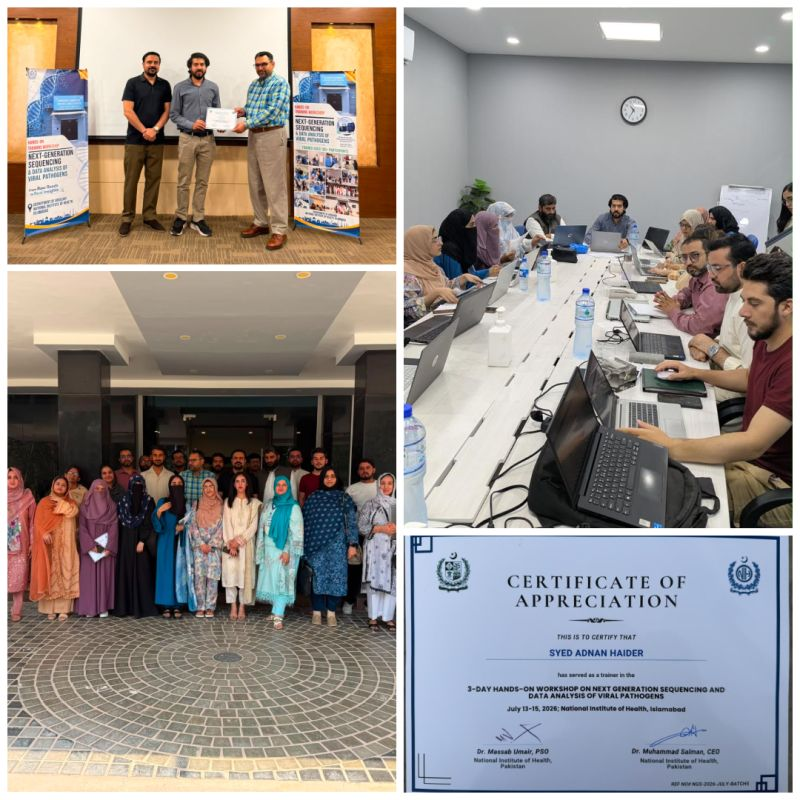
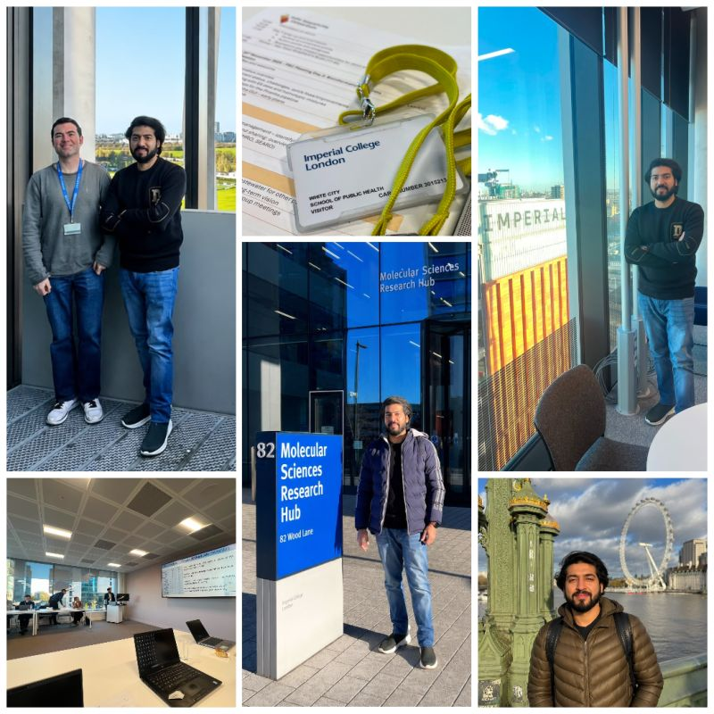
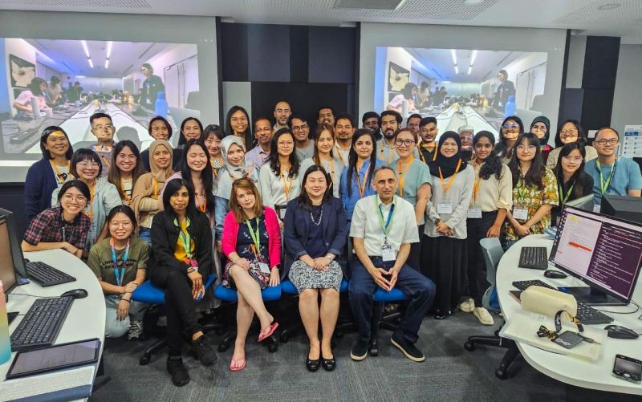
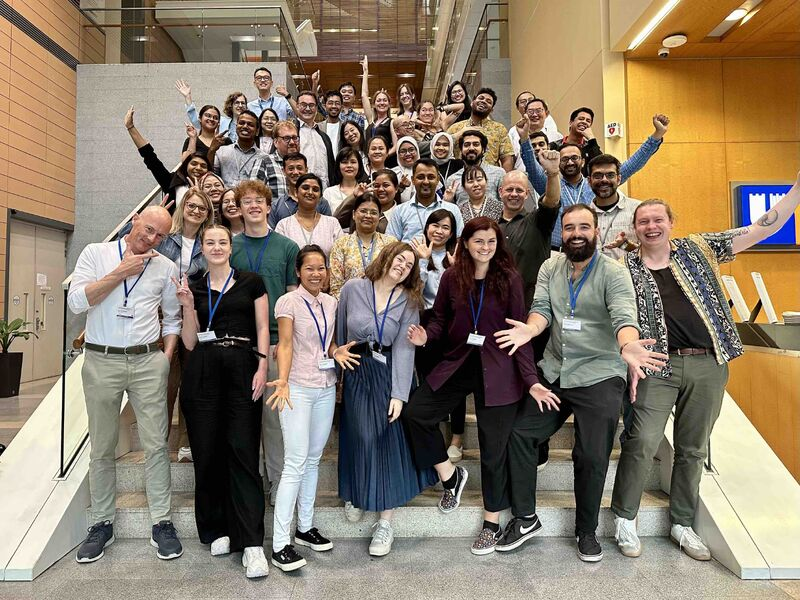

Introduction to NGS and NGS data analysis
Workshop on the laboratory diagnosis of mpox.
Training · Teaching · International exchange
Practical teaching, selected international training, and technical collaboration across sequencing, bioinformatics, genomic epidemiology, wastewater surveillance, and responsible research.

Teaching delivered & mentoring
Selected facilitation, speaking, and mentoring roles from 2016 onward.
Workshop on the laboratory diagnosis of mpox.
Foundational molecular methods for laboratory learners.
Practical sequencing-data interpretation.
Introductory analysis concepts and workflow orientation.
Mentoring staff and trainees toward traceable, independent bench-to-report practice.
Selected engagements
Each activity is labelled by role so teaching, collaboration, meetings, and training received remain distinct.
Department of Virology · National Institute of Health · Islamabad, Pakistan
Contributed practical instruction on command-line bioinformatics and viral sequencing-data analysis, connecting analytical steps, outputs, quality review, and public-health interpretation.

School of Public Health · Imperial College London
Contributed to technical exchange on direct detection by nanopore sequencing, quality assurance, laboratory implementation, data reporting, bioinformatics, and pipeline development.

Monash University · Malaysia
Participated in an intensive workshop organized with Wellcome Connecting Science and the Genome Institute of Singapore, combining practical analysis and international peer learning.

Duke-NUS Medical School · Singapore
Completed seven days of intensive laboratory and bioinformatics training through the Asia Pathogen Genomics Initiative Academy, with participants from across the region.
Certificates & professional development
Titles, issuers, and dates are grouped as a compact credential record; featured activities retain links to public supporting evidence.
National Institute of Health, Islamabad, and Aga Khan University with ASIA-PGI and Duke-NUS
Wellcome Connecting Science Courses and Conferences
Wellcome Connecting Science Courses and Conferences
Duke-NUS Medical School
UK Health Security Agency
UK Health Security Agency
University of Cambridge
Fogarty International Center at NIH
Illumina
Eleven-week applied program
Fogarty International Center at NIH
CITI Program
Teaching approach
Participants should understand how commands, controls, outputs, and reporting decisions fit into one defensible workflow.
Collaborate
Available for workshops, curriculum development, workflow demonstrations, and collaborative capacity building.